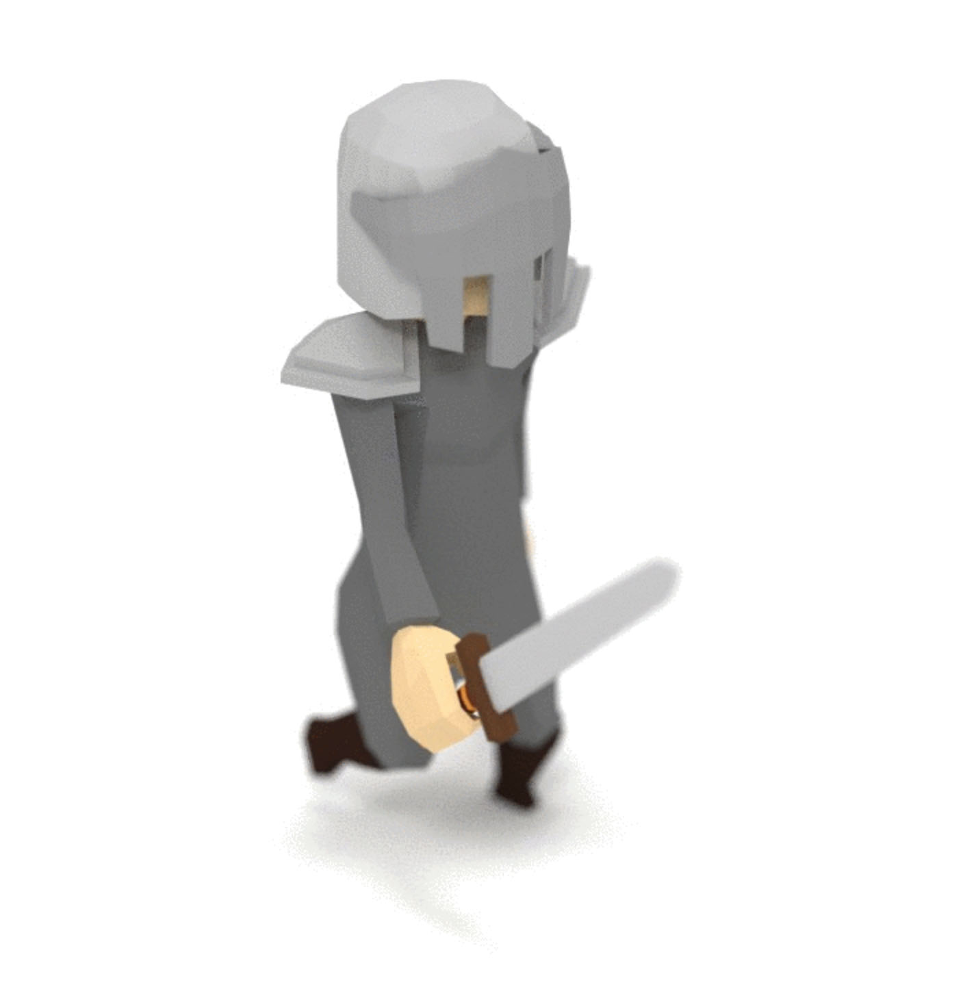
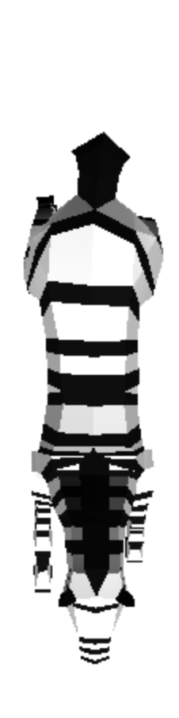
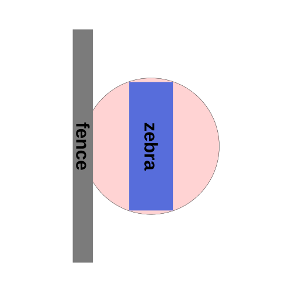

制作游戏
很多人想使用 Three.js 来编写游戏。这篇文章 希望能给您一些关于如何开始的想法。
至少在我写这篇文章时，它可能会是 本网站上最长的文章。这里的代码可能已经大量结束了 但当我编写每个新功能时，我会遇到一个问题，需要一个 我已经习惯了我编写的其他游戏的解决方案。换句话说，每个新 解决方案似乎很重要，所以我将尝试说明原因。当然你的越小 游戏越少，您可能需要此处显示的一些解决方案，但这是一个 相当小的游戏，但由于 3D 角色的复杂性，很多事情 比 2D 角色需要更多的组织。
作为一个例子，如果你在 2D 中制作 PacMan，当 PacMan 转弯时 这在 90 度时立即发生。中间没有步骤。但是 在 3D 游戏中，我们经常需要角色在多个帧上旋转。 这个简单的改变可能会增加很多复杂性并且需要不同的 解决方案.
这里的大部分代码实际上并不是 Three.js 和 值得注意的是，three.js 不是游戏引擎。 Three.js 是一个 3D 库。它提供了一个场景图 以及用于显示添加到该场景图中的 3D 对象的功能 但它并没有提供制作游戏所需的所有其他东西。 没有碰撞，没有物理，没有输入系统，没有路径查找等等...... 所以，我们必须自己提供这些东西。
我最终编写了相当多的代码来使这个简单的未完成 游戏之类的事情一次又一次，这当然有可能是我过度设计了 是更简单的解决方案，但我觉得我实际上没有写 足够的代码，希望我能解释我认为缺少的内容。
这里的许多想法都深受 Unity 的影响。 如果您不熟悉 Unity，那可能并不重要。 我只是在 1000 款游戏中的 10 款使用 这些想法。
让我们从 Three.js 部分开始。我们需要为我们的游戏加载模型。
在 opengameart.org 我发现了这个动画骑士模型，由quaternius

quaternius 的模型还制作了这些动画动物.

这些看起来像是很好的模型，所以我们首先需要 要做的就是加载它们。
我们之前介绍过加载 glTF 文件。 这次的不同之处在于我们需要加载多个模型并且 直到所有模型加载完毕后我们才能开始游戏。
幸运的是， Three.js 为此提供了 LoadingManager 。
我们创建一个 LoadingManager 并将其传递给其他加载器。的
LoadingManager 提供 onProgress 和
我们可以附加回调的 onLoad 属性。
onLoad 回调将在以下情况下调用
所有文件均已加载。 onProgress 回调
在每个单独的文件到达后调用，以提供展示的机会
加载进度.
从加载glTF文件开始，我删除了所有 与构建场景相关的代码并添加此代码来加载所有模型。
const manager = new THREE.LoadingManager();
manager.onLoad = init;
const models = {
pig: { url: 'resources/models/animals/Pig.gltf' },
cow: { url: 'resources/models/animals/Cow.gltf' },
llama: { url: 'resources/models/animals/Llama.gltf' },
pug: { url: 'resources/models/animals/Pug.gltf' },
sheep: { url: 'resources/models/animals/Sheep.gltf' },
zebra: { url: 'resources/models/animals/Zebra.gltf' },
horse: { url: 'resources/models/animals/Horse.gltf' },
knight: { url: 'resources/models/knight/KnightCharacter.gltf' },
};
{
const gltfLoader = new GLTFLoader(manager);
for (const model of Object.values(models)) {
gltfLoader.load(model.url, (gltf) => {
model.gltf = gltf;
});
}
}
function init() {
// TBD
}
此代码将加载上面的所有模型，并且 LoadingManager 将调用
init 完成后。稍后我们将使用 models 对象来访问
加载模型，以便附加每个模型的 GLTFLoader 回调
加载到该模型信息的数据。
所有模型及其所有动画目前约为 6.6meg。那是一个 下载量相当大。假设您的服务器支持压缩（该服务器 网站运行在 dos 上）它能够将它们压缩到大约 1.4meg。那是 绝对比 6.6meg 位好，但它仍然不是一个小数据量。它会 如果我们添加一个进度条可能会很好，这样用户就知道进度了多少 他们必须等待更长的时间。
因此，让我们添加一个 onProgress 回调。它将是
使用 3 个参数调用，最后加载的对象的 url 以及数字
到目前为止加载的项目数以及项目总数。
让我们为加载栏设置一些 HTML
<body> <canvas id="c"></canvas> + <div id="loading"> + <div> + <div>...loading...</div> + <div class="progress"><div id="progressbar"></div></div> + </div> + </div> </body>
我们将查找 #progressbar div，我们可以将宽度设置为 0% 到 100%
来展示我们的进步。我们需要做的就是在回调中进行设置。
const manager = new THREE.LoadingManager();
manager.onLoad = init;
+const progressbarElem = document.querySelector('#progressbar');
+manager.onProgress = (url, itemsLoaded, itemsTotal) => {
+ progressbarElem.style.width = `${itemsLoaded / itemsTotal * 100 | 0}%`;
+};
我们已经设置了 init 在所有模型加载时调用，因此
我们可以通过隐藏 #loading 元素来关闭进度条。
function init() {
+ // hide the loading bar
+ const loadingElem = document.querySelector('#loading');
+ loadingElem.style.display = 'none';
}
这里有一堆用于设置进度条样式的 CSS。 CSS 使 #loading <div>
页面的完整大小并将其子项居中。 CSS 生成 .progress
包含进度条的区域。 CSS 还给出了进度条
对角条纹的 CSS 动画。
#loading {
position: absolute;
left: 0;
top: 0;
width: 100%;
height: 100%;
display: flex;
align-items: center;
justify-content: center;
text-align: center;
font-size: xx-large;
font-family: sans-serif;
}
#loading>div>div {
padding: 2px;
}
.progress {
width: 50vw;
border: 1px solid black;
}
#progressbar {
width: 0;
transition: width ease-out .5s;
height: 1em;
background-color: #888;
background-image: linear-gradient(
-45deg,
rgba(255, 255, 255, .5) 25%,
transparent 25%,
transparent 50%,
rgba(255, 255, 255, .5) 50%,
rgba(255, 255, 255, .5) 75%,
transparent 75%,
transparent
);
background-size: 50px 50px;
animation: progressanim 2s linear infinite;
}
@keyframes progressanim {
0% {
background-position: 50px 50px;
}
100% {
background-position: 0 0;
}
}
现在我们有了进度条，让我们处理模型。这些型号
有动画，我们希望能够访问这些动画。
默认情况下，动画存储在数组中，我们希望能够
通过名称轻松访问它们，因此让我们为它们设置 animations 属性
每个模型都这样做。当然请注意，这意味着动画必须具有唯一的名称。
+function prepModelsAndAnimations() {
+ Object.values(models).forEach(model => {
+ const animsByName = {};
+ model.gltf.animations.forEach((clip) => {
+ animsByName[clip.name] = clip;
+ });
+ model.animations = animsByName;
+ });
+}
function init() {
// hide the loading bar
const loadingElem = document.querySelector('#loading');
loadingElem.style.display = 'none';
+ prepModelsAndAnimations();
}
让我们显示动画模型。
与前面加载 glTF 文件的示例不同
这次我们可能希望能够显示多个实例
每个型号的。要做到这一点，而不是添加
直接加载gltf场景，就像我们在加载glTF的文章中所做的那样，
相反，我们想要克隆场景，特别是我们想要克隆
它适用于动画角色的蒙皮。幸运的是有一个实用函数，
我们可以使用 SkeletonUtils.clone 来做到这一点。所以，首先我们需要包括
utils.
import * as THREE from 'three';
import {OrbitControls} from 'three/addons/controls/OrbitControls.js';
import {GLTFLoader} from 'three/addons/loaders/GLTFLoader.js';
+import * as SkeletonUtils from 'three/addons/utils/SkeletonUtils.js';
然后我们可以克隆我们刚刚加载的模型
function init() {
// hide the loading bar
const loadingElem = document.querySelector('#loading');
loadingElem.style.display = 'none';
prepModelsAndAnimations();
+ Object.values(models).forEach((model, ndx) => {
+ const clonedScene = SkeletonUtils.clone(model.gltf.scene);
+ const root = new THREE.Object3D();
+ root.add(clonedScene);
+ scene.add(root);
+ root.position.x = (ndx - 3) * 3;
+ });
}
上面，对于每个模型，我们克隆我们加载的gltf.scene并将其作为父对象
到新的 Object3D。我们需要将它作为另一个对象的父对象，因为当
我们播放动画动画会将动画位置应用于节点
在加载的场景中，这意味着我们无法控制这些位置。
要播放我们克隆的每个模型的动画，需要一个 AnimationMixer。
一个 AnimationMixer 包含 1 个或多个 AnimationAction。安
AnimationAction 引用 AnimationClip。 AnimationAction
有各种播放设置然后链接到另一个
动作或动作之间的交叉淡入淡出。让我们先得到第一个
AnimationClip 并为其创建一个操作。默认值是用于
永久循环播放剪辑的动作。
+const mixers = [];
function init() {
// hide the loading bar
const loadingElem = document.querySelector('#loading');
loadingElem.style.display = 'none';
prepModelsAndAnimations();
Object.values(models).forEach((model, ndx) => {
const clonedScene = SkeletonUtils.clone(model.gltf.scene);
const root = new THREE.Object3D();
root.add(clonedScene);
scene.add(root);
root.position.x = (ndx - 3) * 3;
+ const mixer = new THREE.AnimationMixer(clonedScene);
+ const firstClip = Object.values(model.animations)[0];
+ const action = mixer.clipAction(firstClip);
+ action.play();
+ mixers.push(mixer);
});
}
我们调用 play 来启动该动作并存储
关闭名为 AnimationMixers 的数组中的所有 mixers。最后
我们需要通过计算来更新渲染循环中的每个 AnimationMixer
自上一帧以来的时间并将其传递给 AnimationMixer.update.
+let then = 0;
function render(now) {
+ now *= 0.001; // convert to seconds
+ const deltaTime = now - then;
+ then = now;
if (resizeRendererToDisplaySize(renderer)) {
const canvas = renderer.domElement;
camera.aspect = canvas.clientWidth / canvas.clientHeight;
camera.updateProjectionMatrix();
}
+ for (const mixer of mixers) {
+ mixer.update(deltaTime);
+ }
renderer.render(scene, camera);
requestAnimationFrame(render);
}
这样我们就应该加载每个模型并播放其第一个动画。
让我们这样做，以便我们可以检查所有动画。 我们将所有剪辑添加为动作，然后仅启用一个
-const mixers = [];
+const mixerInfos = [];
function init() {
// hide the loading bar
const loadingElem = document.querySelector('#loading');
loadingElem.style.display = 'none';
prepModelsAndAnimations();
Object.values(models).forEach((model, ndx) => {
const clonedScene = SkeletonUtils.clone(model.gltf.scene);
const root = new THREE.Object3D();
root.add(clonedScene);
scene.add(root);
root.position.x = (ndx - 3) * 3;
const mixer = new THREE.AnimationMixer(clonedScene);
- const firstClip = Object.values(model.animations)[0];
- const action = mixer.clipAction(firstClip);
- action.play();
- mixers.push(mixer);
+ const actions = Object.values(model.animations).map((clip) => {
+ return mixer.clipAction(clip);
+ });
+ const mixerInfo = {
+ mixer,
+ actions,
+ actionNdx: -1,
+ };
+ mixerInfos.push(mixerInfo);
+ playNextAction(mixerInfo);
});
}
+function playNextAction(mixerInfo) {
+ const {actions, actionNdx} = mixerInfo;
+ const nextActionNdx = (actionNdx + 1) % actions.length;
+ mixerInfo.actionNdx = nextActionNdx;
+ actions.forEach((action, ndx) => {
+ const enabled = ndx === nextActionNdx;
+ action.enabled = enabled;
+ if (enabled) {
+ action.play();
+ }
+ });
+}
上面的代码创建了一个 AnimationAction 数组，
每个 AnimationClip 一个。它创建一个对象数组，mixerInfos，
引用 AnimationMixer 和所有 AnimationAction
对于每个模型。然后它调用 playNextAction ，将 enabled 设置为 on
该混合器除一个操作外的所有操作。
我们需要更新新数组的渲染循环
-for (const mixer of mixers) {
+for (const {mixer} of mixerInfos) {
mixer.update(deltaTime);
}
让我们按 1 到 8 键将播放下一个动画 对于每个模型
window.addEventListener('keydown', (e) => {
const mixerInfo = mixerInfos[e.keyCode - 49];
if (!mixerInfo) {
return;
}
playNextAction(mixerInfo);
});
现在您应该能够单击示例，然后按 1 到 8 键 通过其可用的动画循环每个模型。
所以这可以说是这个的 Three.js 部分的总和
文章。我们涵盖了加载多个文件、克隆皮肤模型、
并在它们上播放动画。在真正的游戏中你必须做
对 AnimationAction 对象进行更多操作。
让我们开始制作游戏基础设施
制作现代游戏的常见模式是使用 实体组件系统。 在实体组件系统中，游戏中的对象称为实体，它包括 一堆组件。您可以通过决定要使用哪些组件来构建实体 附着在他们身上。那么，让我们创建一个实体组件系统。
我们将调用我们的实体GameObject。它实际上只是一个集合
组件和 Three.js Object3D.
function removeArrayElement(array, element) {
const ndx = array.indexOf(element);
if (ndx >= 0) {
array.splice(ndx, 1);
}
}
class GameObject {
constructor(parent, name) {
this.name = name;
this.components = [];
this.transform = new THREE.Object3D();
parent.add(this.transform);
}
addComponent(ComponentType, ...args) {
const component = new ComponentType(this, ...args);
this.components.push(component);
return component;
}
removeComponent(component) {
removeArrayElement(this.components, component);
}
getComponent(ComponentType) {
return this.components.find(c => c instanceof ComponentType);
}
update() {
for (const component of this.components) {
component.update();
}
}
}
Calling GameObject.update 在所有组件上调用 update
我包含的名称只是为了帮助调试，所以如果我查看 GameObject
在调试器中我可以看到一个名称来帮助识别它。
一些可能看起来有点奇怪的东西：
GameObject.addComponent用于创建组件。无论是否
我不确定这是好主意还是坏主意。我的想法是它使
组件存在于游戏对象之外是没有意义的，所以我想
如果创建一个组件自动添加该组件可能会很好
到游戏对象并将游戏对象传递给组件的构造函数。
换句话说，要添加一个组件，你可以这样做
const gameObject = new GameObject(scene, 'foo'); gameObject.addComponent(TypeOfComponent);
如果我没有这样做，你就会这样做
const gameObject = new GameObject(scene, 'foo'); const component = new TypeOfComponent(gameObject); gameObject.addComponent(component);
第一种方法更短、更自动化是更好还是更糟糕 因为它看起来不寻常？我不知道。
GameObject.getComponent 按类型查找组件。那有
这意味着你不能拥有相同的两个组件
在单个游戏对象上键入，或者至少如果你这样做，你只能
查找第一个而不添加其他 API。
一个组件查找另一个组件是很常见的，并且在查找它们时它们 必须按类型匹配，否则可能会得到错误的。我们可以改为 给每个组件一个名称，您可以通过名称查找它们。那将是 更灵活，因为您可以拥有多个相同类型的组件，但它 也会比较乏味。同样，我不确定哪个更好。
关于组件本身。这是它们的基类。
// Base for all components
class Component {
constructor(gameObject) {
this.gameObject = gameObject;
}
update() {
}
}
组件需要基类吗？ JavaScript 并不像最严格的那样 类型语言如此有效，我们可以没有基类，而只是 让每个组件在其构造函数中执行所需的操作 知道第一个参数始终是组件的游戏对象。 如果它不关心游戏对象，它就不会存储它。我有点像这样的感觉 不过共同基础还是不错的。这意味着如果您有一个参考 您知道您可以始终从组件中找到其父游戏对象 父级，您可以轻松查找其他组件以及查看其
为了管理游戏对象，我们可能需要某种游戏对象管理器。你 可能认为我们可以只保留一组游戏对象，但在真正的游戏中 游戏对象的组件可能会在运行时添加和删除其他游戏对象。 例如，枪游戏对象可能会在每次枪时添加子弹游戏对象 火灾。如果怪物游戏对象被杀死，它可能会自行移除。我们然后 会有一个问题，我们可能有这样的代码
for (const gameObject of globalArrayOfGameObjects) {
gameObject.update();
}
上面的循环将失败或做意想不到的事情，如果
游戏对象从 globalArrayOfGameObjects 添加或删除
在某些组件的 update 函数的循环中间。
为了尝试防止该问题，我们需要一些更安全的东西。 这是一种尝试。
class SafeArray {
constructor() {
this.array = [];
this.addQueue = [];
this.removeQueue = new Set();
}
get isEmpty() {
return this.addQueue.length + this.array.length > 0;
}
add(element) {
this.addQueue.push(element);
}
remove(element) {
this.removeQueue.add(element);
}
forEach(fn) {
this._addQueued();
this._removeQueued();
for (const element of this.array) {
if (this.removeQueue.has(element)) {
continue;
}
fn(element);
}
this._removeQueued();
}
_addQueued() {
if (this.addQueue.length) {
this.array.splice(this.array.length, 0, ...this.addQueue);
this.addQueue = [];
}
}
_removeQueued() {
if (this.removeQueue.size) {
this.array = this.array.filter(element => !this.removeQueue.has(element));
this.removeQueue.clear();
}
}
}
上面的类允许您从 SafeArray 添加或删除元素
但在迭代时不会扰乱数组本身。相反
新元素添加到 addQueue 并将元素删除到 removeQueue
然后在循环之外添加或删除。
使用我们的类来管理游戏对象。
class GameObjectManager {
constructor() {
this.gameObjects = new SafeArray();
}
createGameObject(parent, name) {
const gameObject = new GameObject(parent, name);
this.gameObjects.add(gameObject);
return gameObject;
}
removeGameObject(gameObject) {
this.gameObjects.remove(gameObject);
}
update() {
this.gameObjects.forEach(gameObject => gameObject.update());
}
}
现在让我们制作第一个组件。该组件
将只管理一个带有皮肤的 Three.js 对象，就像我们刚刚创建的对象一样。
为了简单起见，它只有一种方法， setAnimation ，
获取要播放的动画的名称并播放它。
class SkinInstance extends Component {
constructor(gameObject, model) {
super(gameObject);
this.model = model;
this.animRoot = SkeletonUtils.clone(this.model.gltf.scene);
this.mixer = new THREE.AnimationMixer(this.animRoot);
gameObject.transform.add(this.animRoot);
this.actions = {};
}
setAnimation(animName) {
const clip = this.model.animations[animName];
// turn off all current actions
for (const action of Object.values(this.actions)) {
action.enabled = false;
}
// get or create existing action for clip
const action = this.mixer.clipAction(clip);
action.enabled = true;
action.reset();
action.play();
this.actions[animName] = action;
}
update() {
this.mixer.update(globals.deltaTime);
}
}
你可以看到它基本上是我们之前克隆我们加载的场景的代码，
然后设置一个 AnimationMixer。 setAnimation 添加 AnimationAction
特定的 AnimationClip（如果尚不存在）并禁用所有
现有操作。
代码引用globals.deltaTime。让我们创建一个全局对象
const globals = {
time: 0,
deltaTime: 0,
};
并在渲染循环中更新它
let then = 0;
function render(now) {
// convert to seconds
globals.time = now * 0.001;
// make sure delta time isn't too big.
globals.deltaTime = Math.min(globals.time - then, 1 / 20);
then = globals.time;
上面的检查以确保deltaTime不超过1/20
一秒是因为否则我们会得到 deltaTime 的巨大值
如果我们隐藏选项卡。我们可能会将其隐藏几秒钟或几分钟，然后
当我们的选项卡被带到前面时 deltaTime 将是巨大的
如果我们有类似
position += velocity * deltaTime;
的代码，则可能会在游戏世界中传送角色，通过限制最大 deltaTime 可以防止该问题。
现在让我们为播放器制作一个组件。
class Player extends Component {
constructor(gameObject) {
super(gameObject);
const model = models.knight;
this.skinInstance = gameObject.addComponent(SkinInstance, model);
this.skinInstance.setAnimation('Run');
}
}
播放器用setAnimation调用'Run'。想知道哪些动画
我修改了之前的示例以打印出以下人员的姓名
动画
function prepModelsAndAnimations() {
Object.values(models).forEach(model => {
+ console.log('------->:', model.url);
const animsByName = {};
model.gltf.animations.forEach((clip) => {
animsByName[clip.name] = clip;
+ console.log(' ', clip.name);
});
model.animations = animsByName;
});
}
并运行它，在JavaScript 控制台中得到此列表。
------->: resources/models/animals/Pig.gltf
Idle
Death
WalkSlow
Jump
Walk
------->: resources/models/animals/Cow.gltf
Walk
Jump
WalkSlow
Death
Idle
------->: resources/models/animals/Llama.gltf
Jump
Idle
Walk
Death
WalkSlow
------->: resources/models/animals/Pug.gltf
Jump
Walk
Idle
WalkSlow
Death
------->: resources/models/animals/Sheep.gltf
WalkSlow
Death
Jump
Walk
Idle
------->: resources/models/animals/Zebra.gltf
Jump
Walk
Death
WalkSlow
Idle
------->: resources/models/animals/Horse.gltf
Jump
WalkSlow
Death
Walk
Idle
------->: resources/models/knight/KnightCharacter.gltf
Run_swordRight
Run
Idle_swordLeft
Roll_sword
Idle
Run_swordAttack
幸运的是，所有动物的动画名称都匹配
稍后会派上用场。现在我们只关心
播放器有一个名为 Run 的动画。
让我们使用这些组件。这是更新的 init 函数。
它所做的只是创建一个 GameObject 并向其添加 Player 组件。
const globals = {
time: 0,
deltaTime: 0,
};
+const gameObjectManager = new GameObjectManager();
function init() {
// hide the loading bar
const loadingElem = document.querySelector('#loading');
loadingElem.style.display = 'none';
prepModelsAndAnimations();
+ {
+ const gameObject = gameObjectManager.createGameObject(scene, 'player');
+ gameObject.addComponent(Player);
+ }
}
我们需要在渲染循环中调用 gameObjectManager.update
let then = 0;
function render(now) {
// convert to seconds
globals.time = now * 0.001;
// make sure delta time isn't too big.
globals.deltaTime = Math.min(globals.time - then, 1 / 20);
then = globals.time;
if (resizeRendererToDisplaySize(renderer)) {
const canvas = renderer.domElement;
camera.aspect = canvas.clientWidth / canvas.clientHeight;
camera.updateProjectionMatrix();
}
- for (const {mixer} of mixerInfos) {
- mixer.update(deltaTime);
- }
+ gameObjectManager.update();
renderer.render(scene, camera);
requestAnimationFrame(render);
}
如果我们运行它，我们会得到一个player.
对于实体组件系统来说有很多代码，但是 这是大多数游戏需要的基础设施。
让我们添加一个输入系统。我们不直接读取密钥
创建一个类，代码的其他部分可以检查 left 或 right。
这样我们就可以指定多种方式输入left或right等。
我们将从按键开始
// Keeps the state of keys/buttons
//
// You can check
//
// inputManager.keys.left.down
//
// to see if the left key is currently held down
// and you can check
//
// inputManager.keys.left.justPressed
//
// To see if the left key was pressed this frame
//
// Keys are 'left', 'right', 'a', 'b', 'up', 'down'
class InputManager {
constructor() {
this.keys = {};
const keyMap = new Map();
const setKey = (keyName, pressed) => {
const keyState = this.keys[keyName];
keyState.justPressed = pressed && !keyState.down;
keyState.down = pressed;
};
const addKey = (keyCode, name) => {
this.keys[name] = { down: false, justPressed: false };
keyMap.set(keyCode, name);
};
const setKeyFromKeyCode = (keyCode, pressed) => {
const keyName = keyMap.get(keyCode);
if (!keyName) {
return;
}
setKey(keyName, pressed);
};
addKey(37, 'left');
addKey(39, 'right');
addKey(38, 'up');
addKey(40, 'down');
addKey(90, 'a');
addKey(88, 'b');
window.addEventListener('keydown', (e) => {
setKeyFromKeyCode(e.keyCode, true);
});
window.addEventListener('keyup', (e) => {
setKeyFromKeyCode(e.keyCode, false);
});
}
update() {
for (const keyState of Object.values(this.keys)) {
if (keyState.justPressed) {
keyState.justPressed = false;
}
}
}
}
上面的代码跟踪按键是按下还是抬起，你可以通过检查例如 inputManager.keys.left.down 来查看某个按键当前是否被按下。它还为每个按键提供了 justPressed 属性，这样你可以检查用户是否刚刚按下了按键。例如，对于跳跃键，你不想知道按钮是否被持续按下，你想知道用户是否现在按下了它。
让我们创建一个 InputManager
const globals = {
time: 0,
deltaTime: 0,
};
const gameObjectManager = new GameObjectManager();
+const inputManager = new InputManager();
的实例并在渲染循环中更新它
function render(now) {
...
gameObjectManager.update();
+ inputManager.update();
...
}
它需要在之后调用gameObjectManager.update 否则
justPressed 在组件的 update 函数中永远不会成立。
让我们在 Player 组件中使用它
+const kForward = new THREE.Vector3(0, 0, 1);
const globals = {
time: 0,
deltaTime: 0,
+ moveSpeed: 16,
};
class Player extends Component {
constructor(gameObject) {
super(gameObject);
const model = models.knight;
this.skinInstance = gameObject.addComponent(SkinInstance, model);
this.skinInstance.setAnimation('Run');
+ this.turnSpeed = globals.moveSpeed / 4;
}
+ update() {
+ const {deltaTime, moveSpeed} = globals;
+ const {transform} = this.gameObject;
+ const delta = (inputManager.keys.left.down ? 1 : 0) +
+ (inputManager.keys.right.down ? -1 : 0);
+ transform.rotation.y += this.turnSpeed * delta * deltaTime;
+ transform.translateOnAxis(kForward, moveSpeed * deltaTime);
+ }
}
上面的代码使用 Object3D.transformOnAxis 来移动玩家
向前。 Object3D.transformOnAxis 在本地空间中工作，因此它只能
如果相关对象位于场景的根部，则有效，而不是
父级为其他内容1
我们还添加了一个全局moveSpeed并基于移动速度的turnSpeed。
转弯速度是根据移动速度来尝试确保角色
可以急剧转向以实现其目标。如果 turnSpeed 那么太小
角色会绕着目标转来转去，但永远不会
击中它。我懒得做数学计算来计算所需的
给定移动速度的转动速度。我只是猜测.
到目前为止的代码可以工作，但如果玩家跑出屏幕，就没有
找出他们在哪里的方法。如果他们不在屏幕上，我们就这样做吧
超过一定时间后，他们会被传送回原点。
我们可以通过使用 Three.js Frustum 类来检查点是否
位于相机的视锥体内。
我们需要从相机构建一个视锥体。我们可以在播放器中执行此操作 组件，但其他对象可能也想使用它，所以让我们添加另一个 带有管理平截头体组件的游戏对象.
class CameraInfo extends Component {
constructor(gameObject) {
super(gameObject);
this.projScreenMatrix = new THREE.Matrix4();
this.frustum = new THREE.Frustum();
}
update() {
const {camera} = globals;
this.projScreenMatrix.multiplyMatrices(
camera.projectionMatrix,
camera.matrixWorldInverse);
this.frustum.setFromProjectionMatrix(this.projScreenMatrix);
}
}
然后让我们在初始化时设置另一个游戏对象.
function init() {
// hide the loading bar
const loadingElem = document.querySelector('#loading');
loadingElem.style.display = 'none';
prepModelsAndAnimations();
+ {
+ const gameObject = gameObjectManager.createGameObject(camera, 'camera');
+ globals.cameraInfo = gameObject.addComponent(CameraInfo);
+ }
{
const gameObject = gameObjectManager.createGameObject(scene, 'player');
gameObject.addComponent(Player);
}
}
现在我们可以在Player组件中使用它.
class Player extends Component {
constructor(gameObject) {
super(gameObject);
const model = models.knight;
this.skinInstance = gameObject.addComponent(SkinInstance, model);
this.skinInstance.setAnimation('Run');
this.turnSpeed = globals.moveSpeed / 4;
+ this.offscreenTimer = 0;
+ this.maxTimeOffScreen = 3;
}
update() {
- const {deltaTime, moveSpeed} = globals;
+ const {deltaTime, moveSpeed, cameraInfo} = globals;
const {transform} = this.gameObject;
const delta = (inputManager.keys.left.down ? 1 : 0) +
(inputManager.keys.right.down ? -1 : 0);
transform.rotation.y += this.turnSpeed * delta * deltaTime;
transform.translateOnAxis(kForward, moveSpeed * deltaTime);
+ const {frustum} = cameraInfo;
+ if (frustum.containsPoint(transform.position)) {
+ this.offscreenTimer = 0;
+ } else {
+ this.offscreenTimer += deltaTime;
+ if (this.offscreenTimer >= this.maxTimeOffScreen) {
+ transform.position.set(0, 0, 0);
+ }
+ }
}
}
在我们尝试之前还有一件事，让我们添加触摸屏支持 对于移动设备。首先，让我们添加一些 HTML 来触摸
<body>
<canvas id="c"></canvas>
+ <div id="ui">
+ <div id="left"><img src="../resources/images/left.svg"></div>
+ <div style="flex: 0 0 40px;"></div>
+ <div id="right"><img src="../resources/images/right.svg"></div>
+ </div>
<div id="loading">
<div>
<div>...loading...</div>
<div class="progress"><div id="progressbar"></div></div>
</div>
</div>
</body>
和一些 CSS 来设置它的样式
#ui {
position: absolute;
left: 0;
top: 0;
width: 100%;
height: 100%;
display: flex;
justify-items: center;
align-content: stretch;
}
#ui>div {
display: flex;
align-items: flex-end;
flex: 1 1 auto;
}
.bright {
filter: brightness(2);
}
#left {
justify-content: flex-end;
}
#right {
justify-content: flex-start;
}
#ui img {
padding: 10px;
width: 80px;
height: 80px;
display: block;
}
这里的想法是有一个 div，#ui，
覆盖整个页面。里面有 2 个 div，#left 和 #right
两者的宽度几乎是页面的一半，高度是整个屏幕。
中间有一个 40px 的分隔符。如果用户滑动手指
在左侧或右侧，然后我们需要更新 keys.left 和 keys.right
在 InputManager 中。这使得整个屏幕对触摸都很敏感
这看起来比只是小箭头更好。
class InputManager {
constructor() {
this.keys = {};
const keyMap = new Map();
const setKey = (keyName, pressed) => {
const keyState = this.keys[keyName];
keyState.justPressed = pressed && !keyState.down;
keyState.down = pressed;
};
const addKey = (keyCode, name) => {
this.keys[name] = { down: false, justPressed: false };
keyMap.set(keyCode, name);
};
const setKeyFromKeyCode = (keyCode, pressed) => {
const keyName = keyMap.get(keyCode);
if (!keyName) {
return;
}
setKey(keyName, pressed);
};
addKey(37, 'left');
addKey(39, 'right');
addKey(38, 'up');
addKey(40, 'down');
addKey(90, 'a');
addKey(88, 'b');
window.addEventListener('keydown', (e) => {
setKeyFromKeyCode(e.keyCode, true);
});
window.addEventListener('keyup', (e) => {
setKeyFromKeyCode(e.keyCode, false);
});
+ const sides = [
+ { elem: document.querySelector('#left'), key: 'left' },
+ { elem: document.querySelector('#right'), key: 'right' },
+ ];
+
+ const clearKeys = () => {
+ for (const {key} of sides) {
+ setKey(key, false);
+ }
+ };
+
+ const handleMouseMove = (e) => {
+ e.preventDefault();
+ // this is needed because we call preventDefault();
+ // we also gave the canvas a tabindex so it can
+ // become the focus
+ canvas.focus();
+ window.addEventListener('pointermove', handleMouseMove);
+ window.addEventListener('pointerup', handleMouseUp);
+
+ for (const {elem, key} of sides) {
+ let pressed = false;
+ const rect = elem.getBoundingClientRect();
+ const x = e.clientX;
+ const y = e.clientY;
+ const inRect = x >= rect.left && x < rect.right &&
+ y >= rect.top && y < rect.bottom;
+ if (inRect) {
+ pressed = true;
+ }
+ setKey(key, pressed);
+ }
+ };
+
+ function handleMouseUp() {
+ clearKeys();
+ window.removeEventListener('pointermove', handleMouseMove, {passive: false});
+ window.removeEventListener('pointerup', handleMouseUp);
+ }
+
+ const uiElem = document.querySelector('#ui');
+ uiElem.addEventListener('pointerdown', handleMouseMove, {passive: false});
+
+ uiElem.addEventListener('touchstart', (e) => {
+ // prevent scrolling
+ e.preventDefault();
+ }, {passive: false});
}
update() {
for (const keyState of Object.values(this.keys)) {
if (keyState.justPressed) {
keyState.justPressed = false;
}
}
}
}
现在我们应该能够用左右控制角色 光标键或用手指在触摸屏上
理想情况下，如果玩家离开屏幕（例如移动），我们会做其他事情 相机或者屏幕外=死亡，但这篇文章已经准备好了 太长了，所以现在传送到中间是最简单的事情。
让我们添加一些动物。我们可以通过类似于 Player 的方式开始它
Animal 组件.
class Animal extends Component {
constructor(gameObject, model) {
super(gameObject);
const skinInstance = gameObject.addComponent(SkinInstance, model);
skinInstance.mixer.timeScale = globals.moveSpeed / 4;
skinInstance.setAnimation('Idle');
}
}
上面的代码设置 AnimationMixer.timeScale 来设置播放
动画的速度相对于移动速度。这样如果我们
调整移动速度，动画也会加速或减慢。
首先，我们可以设置每种类型的动物之一
function init() {
// hide the loading bar
const loadingElem = document.querySelector('#loading');
loadingElem.style.display = 'none';
prepModelsAndAnimations();
{
const gameObject = gameObjectManager.createGameObject(camera, 'camera');
globals.cameraInfo = gameObject.addComponent(CameraInfo);
}
{
const gameObject = gameObjectManager.createGameObject(scene, 'player');
globals.player = gameObject.addComponent(Player);
globals.congaLine = [gameObject];
}
+ const animalModelNames = [
+ 'pig',
+ 'cow',
+ 'llama',
+ 'pug',
+ 'sheep',
+ 'zebra',
+ 'horse',
+ ];
+ animalModelNames.forEach((name, ndx) => {
+ const gameObject = gameObjectManager.createGameObject(scene, name);
+ gameObject.addComponent(Animal, models[name]);
+ gameObject.transform.position.x = (ndx + 1) * 5;
+ });
}
这将使我们的动物站在屏幕上，但我们希望他们这样做
让我们让它们沿着康茄线跟随玩家，但前提是玩家足够近。 为此，我们需要几个状态。
空闲：
动物正在等待玩家靠近
等待行尾：
动物已被玩家标记，但现在需要等待动物 位于队伍末尾，以便他们可以加入队伍末尾。
转到最后一个：
动物需要走到他们跟随的动物所在的位置，同时记录 他们所跟踪的动物当前所在位置的历史记录。
Follow
Animal 需要不断记录他们所跟踪的动物当前所在位置的历史记录 移动到他们跟随的动物之前所在的位置。
有很多方法可以处理这样的不同状态。常见的一个是使用 有限状态机 和 构建一些类来帮助我们管理状态。
所以，让我们这样做。
class FiniteStateMachine {
constructor(states, initialState) {
this.states = states;
this.transition(initialState);
}
get state() {
return this.currentState;
}
transition(state) {
const oldState = this.states[this.currentState];
if (oldState && oldState.exit) {
oldState.exit.call(this);
}
this.currentState = state;
const newState = this.states[state];
if (newState.enter) {
newState.enter.call(this);
}
}
update() {
const state = this.states[this.currentState];
if (state.update) {
state.update.call(this);
}
}
}
这是一个简单的类。我们向它传递一个具有一堆状态的对象。
每个状态为 3 个可选函数：enter、update 和 exit。
要切换状态，我们调用 FiniteStateMachine.transition 并传递它
新状态的名称。如果当前状态有 exit 函数
它被称为。然后，如果新状态有 enter 函数，则会调用它。
最后每一帧FiniteStateMachine.update调用update函数
当前状态的。
让我们用它来管理动物的状态。
// Returns true of obj1 and obj2 are close
function isClose(obj1, obj1Radius, obj2, obj2Radius) {
const minDist = obj1Radius + obj2Radius;
const dist = obj1.position.distanceTo(obj2.position);
return dist < minDist;
}
// keeps v between -min and +min
function minMagnitude(v, min) {
return Math.abs(v) > min
? min * Math.sign(v)
: v;
}
const aimTowardAndGetDistance = function() {
const delta = new THREE.Vector3();
return function aimTowardAndGetDistance(source, targetPos, maxTurn) {
delta.subVectors(targetPos, source.position);
// compute the direction we want to be facing
const targetRot = Math.atan2(delta.x, delta.z) + Math.PI * 1.5;
// rotate in the shortest direction
const deltaRot = (targetRot - source.rotation.y + Math.PI * 1.5) % (Math.PI * 2) - Math.PI;
// make sure we don't turn faster than maxTurn
const deltaRotation = minMagnitude(deltaRot, maxTurn);
// keep rotation between 0 and Math.PI * 2
source.rotation.y = THREE.MathUtils.euclideanModulo(
source.rotation.y + deltaRotation, Math.PI * 2);
// return the distance to the target
return delta.length();
};
}();
class Animal extends Component {
constructor(gameObject, model) {
super(gameObject);
+ const hitRadius = model.size / 2;
const skinInstance = gameObject.addComponent(SkinInstance, model);
skinInstance.mixer.timeScale = globals.moveSpeed / 4;
+ const transform = gameObject.transform;
+ const playerTransform = globals.player.gameObject.transform;
+ const maxTurnSpeed = Math.PI * (globals.moveSpeed / 4);
+ const targetHistory = [];
+ let targetNdx = 0;
+
+ function addHistory() {
+ const targetGO = globals.congaLine[targetNdx];
+ const newTargetPos = new THREE.Vector3();
+ newTargetPos.copy(targetGO.transform.position);
+ targetHistory.push(newTargetPos);
+ }
+
+ this.fsm = new FiniteStateMachine({
+ idle: {
+ enter: () => {
+ skinInstance.setAnimation('Idle');
+ },
+ update: () => {
+ // check if player is near
+ if (isClose(transform, hitRadius, playerTransform, globals.playerRadius)) {
+ this.fsm.transition('waitForEnd');
+ }
+ },
+ },
+ waitForEnd: {
+ enter: () => {
+ skinInstance.setAnimation('Jump');
+ },
+ update: () => {
+ // get the gameObject at the end of the conga line
+ const lastGO = globals.congaLine[globals.congaLine.length - 1];
+ const deltaTurnSpeed = maxTurnSpeed * globals.deltaTime;
+ const targetPos = lastGO.transform.position;
+ aimTowardAndGetDistance(transform, targetPos, deltaTurnSpeed);
+ // check if last thing in conga line is near
+ if (isClose(transform, hitRadius, lastGO.transform, globals.playerRadius)) {
+ this.fsm.transition('goToLast');
+ }
+ },
+ },
+ goToLast: {
+ enter: () => {
+ // remember who we're following
+ targetNdx = globals.congaLine.length - 1;
+ // add ourselves to the conga line
+ globals.congaLine.push(gameObject);
+ skinInstance.setAnimation('Walk');
+ },
+ update: () => {
+ addHistory();
+ // walk to the oldest point in the history
+ const targetPos = targetHistory[0];
+ const maxVelocity = globals.moveSpeed * globals.deltaTime;
+ const deltaTurnSpeed = maxTurnSpeed * globals.deltaTime;
+ const distance = aimTowardAndGetDistance(transform, targetPos, deltaTurnSpeed);
+ const velocity = distance;
+ transform.translateOnAxis(kForward, Math.min(velocity, maxVelocity));
+ if (distance <= maxVelocity) {
+ this.fsm.transition('follow');
+ }
+ },
+ },
+ follow: {
+ update: () => {
+ addHistory();
+ // remove the oldest history and just put ourselves there.
+ const targetPos = targetHistory.shift();
+ transform.position.copy(targetPos);
+ const deltaTurnSpeed = maxTurnSpeed * globals.deltaTime;
+ aimTowardAndGetDistance(transform, targetHistory[0], deltaTurnSpeed);
+ },
+ },
+ }, 'idle');
+ }
+ update() {
+ this.fsm.update();
+ }
}
这是一大块代码，但它执行上面描述的操作。 希望您通过每个状态都会清楚。
我们需要添加一些内容。我们需要玩家添加自己
到全局，以便动物能够找到它，我们需要开始
康加舞线与玩家的GameObject.
function init() {
...
{
const gameObject = gameObjectManager.createGameObject(scene, 'player');
+ globals.player = gameObject.addComponent(Player);
+ globals.congaLine = [gameObject];
}
}
我们还需要计算每个模型的尺寸
function prepModelsAndAnimations() {
+ const box = new THREE.Box3();
+ const size = new THREE.Vector3();
Object.values(models).forEach(model => {
+ box.setFromObject(model.gltf.scene);
+ box.getSize(size);
+ model.size = size.length();
const animsByName = {};
model.gltf.animations.forEach((clip) => {
animsByName[clip.name] = clip;
// Should really fix this in .blend file
if (clip.name === 'Walk') {
clip.duration /= 2;
}
});
model.animations = animsByName;
});
}
并且我们需要玩家记录他们的尺寸
class Player extends Component {
constructor(gameObject) {
super(gameObject);
const model = models.knight;
+ globals.playerRadius = model.size / 2;
现在想想它可能会更聪明 让动物只瞄准康加线的头部 而不是专门针对玩家。也许我会回来 稍后更改。
当我第一次开始时，我只对所有动物使用一个半径
但这当然不好，因为哈巴狗比马小得多。
所以我添加了不同的大小，但我希望能够可视化
的事情。为此，我制作了一个 StateDisplayHelper 组件。
I 使用 PolarGridHelper 在每个字符周围画一个圆圈
它使用 html 元素让每个角色显示一些状态
关于将 html 元素对齐到 3D 的文章中介绍的技术。
首先我们需要添加一些 HTML 来托管这些元素
<body>
<canvas id="c"></canvas>
<div id="ui">
<div id="left"><img src="../resources/images/left.svg"></div>
<div style="flex: 0 0 40px;"></div>
<div id="right"><img src="../resources/images/right.svg"></div>
</div>
<div id="loading">
<div>
<div>...loading...</div>
<div class="progress"><div id="progressbar"></div></div>
</div>
</div>
+ <div id="labels"></div>
</body>
并为它们添加一些 CSS
#labels {
position: absolute; /* let us position ourself inside the container */
left: 0; /* make our position the top left of the container */
top: 0;
color: white;
width: 100%;
height: 100%;
overflow: hidden;
pointer-events: none;
}
#labels>div {
position: absolute; /* let us position them inside the container */
left: 0; /* make their default position the top left of the container */
top: 0;
font-size: large;
font-family: monospace;
user-select: none; /* don't let the text get selected */
text-shadow: /* create a black outline */
-1px -1px 0 #000,
0 -1px 0 #000,
1px -1px 0 #000,
1px 0 0 #000,
1px 1px 0 #000,
0 1px 0 #000,
-1px 1px 0 #000,
-1px 0 0 #000;
}
然后这里是组件
const labelContainerElem = document.querySelector('#labels');
class StateDisplayHelper extends Component {
constructor(gameObject, size) {
super(gameObject);
this.elem = document.createElement('div');
labelContainerElem.appendChild(this.elem);
this.pos = new THREE.Vector3();
this.helper = new THREE.PolarGridHelper(size / 2, 1, 1, 16);
gameObject.transform.add(this.helper);
}
setState(s) {
this.elem.textContent = s;
}
setColor(cssColor) {
this.elem.style.color = cssColor;
this.helper.material.color.set(cssColor);
}
update() {
const {pos} = this;
const {transform} = this.gameObject;
const {canvas} = globals;
pos.copy(transform.position);
// get the normalized screen coordinate of that position
// x and y will be in the -1 to +1 range with x = -1 being
// on the left and y = -1 being on the bottom
pos.project(globals.camera);
// convert the normalized position to CSS coordinates
const x = (pos.x * .5 + .5) * canvas.clientWidth;
const y = (pos.y * -.5 + .5) * canvas.clientHeight;
// move the elem to that position
this.elem.style.transform = `translate(-50%, -50%) translate(${x}px,${y}px)`;
}
}
然后我们可以将它们添加到像这样的动物
class Animal extends Component {
constructor(gameObject, model) {
super(gameObject);
+ this.helper = gameObject.addComponent(StateDisplayHelper, model.size);
...
}
update() {
this.fsm.update();
+ const dir = THREE.MathUtils.radToDeg(this.gameObject.transform.rotation.y);
+ this.helper.setState(`${this.fsm.state}:${dir.toFixed(0)}`);
}
}
当我们这样做的时候，让我们制作它，这样我们就可以使用lil-gui打开/关闭它们，比如 我们在其他地方使用了
import * as THREE from 'three';
import {OrbitControls} from 'three/addons/controls/OrbitControls.js';
import {GLTFLoader} from 'three/addons/loaders/GLTFLoader.js';
import * as SkeletonUtils from 'three/addons/utils/SkeletonUtils.js';
+import {GUI} from 'three/addons/libs/lil-gui.module.min.js';
+const gui = new GUI();
+gui.add(globals, 'debug').onChange(showHideDebugInfo);
+showHideDebugInfo();
const labelContainerElem = document.querySelector('#labels');
+function showHideDebugInfo() {
+ labelContainerElem.style.display = globals.debug ? '' : 'none';
+}
+showHideDebugInfo();
class StateDisplayHelper extends Component {
...
update() {
+ this.helper.visible = globals.debug;
+ if (!globals.debug) {
+ return;
+ }
...
}
}
这样我们就得到了游戏的开始
最初我打算制作一个贪吃蛇游戏 当您将动物添加到您的生产线中时，它会变得更加困难，因为您需要避免 撞到他们身上。我还会在场景中放置一些障碍物，也许是栅栏或其他东西 周围有屏障。
不幸的是，这些动物又长又瘦。从上面看，这是斑马。

到目前为止，代码正在使用圆形碰撞，这意味着如果我们有栅栏等障碍物 那么这将被视为碰撞

这不好。即使是动物到动物，我们也会遇到同样的问题
我想过编写一个 2D 矩形到矩形碰撞系统，但我 很快意识到这可能真的有很多代码。任意检查2 定向框重叠并没有太多代码，对于我们的游戏来说只需要很少的代码 它可能有效的对象，但在您快速启动的几个对象之后查看它 需要优化碰撞检查。首先你可能会经历所有 可能相互碰撞的物体并检查它们的边界 球体或边界圆或其轴向对齐的边界框。一旦你 知道哪些物体可能发生碰撞，那么您需要做更多的工作来检查是否发生碰撞 它们实际上正在碰撞。通常甚至检查边界球也太过分了 很多工作，你需要某种更好的物体空间结构，所以 您可以更快地仅检查可能彼此靠近的对象。
然后，一旦您编写代码来检查您通常想要的两个对象是否发生碰撞 制作一个碰撞系统，而不是手动询问“我会与这些碰撞吗？” 对象”。碰撞系统发出事件或调用相关的回调 事物发生碰撞。优点是它可以一次检查所有碰撞，所以不需要 对象被多次检查，就好像你手动调用一些“我是吗？ 碰撞”函数通常会多次检查对象，浪费时间。
制作碰撞系统可能不会超过 100-300 行 仅检查任意方向的矩形的代码，但它仍然多得多 代码，因此似乎最好将其省略。
另一个解决方案是尝试查找其他字符 从顶部看大多呈圆形。例如其他人形角色 在这种情况下，循环检查可能会在动物与动物之间进行。 将动物围起来是行不通的，我们必须在矩形上添加圆形 检查。我想过把栅栏做成灌木丛或柱子之类的栅栏 圆形，但我可能需要 120 到 200 个来围绕游乐区 这会遇到上面提到的优化问题。
这些是许多游戏使用现有解决方案的原因。往往有这些解决方案 是物理库的一部分。物理库需要知道对象是否 相互碰撞，因此除了提供物理效果之外，它们还可以被使用 检测碰撞。
如果您正在寻找解决方案，则 Three.js 示例中的一些使用 ammo.js 所以这可能就是其中之一。
另一种解决方案可能是将障碍物放置在网格上 并尝试让每只动物和玩家只需要看看 网格。虽然这会很有效，但我觉得最好还是把它作为练习 对于读者😜
还有一件事，许多游戏系统都有一种称为协程的东西。 协程是可以在运行时暂停并稍后继续的例程。
让我们让主角发出音符，就像他们在引导一样 通过唱歌行。我们可以通过多种方式实现这一点，但目前 让我们使用协程来完成它。
首先，这是一个管理协程的类
function* waitSeconds(duration) {
while (duration > 0) {
duration -= globals.deltaTime;
yield;
}
}
class CoroutineRunner {
constructor() {
this.generatorStacks = [];
this.addQueue = [];
this.removeQueue = new Set();
}
isBusy() {
return this.addQueue.length + this.generatorStacks.length > 0;
}
add(generator, delay = 0) {
const genStack = [generator];
if (delay) {
genStack.push(waitSeconds(delay));
}
this.addQueue.push(genStack);
}
remove(generator) {
this.removeQueue.add(generator);
}
update() {
this._addQueued();
this._removeQueued();
for (const genStack of this.generatorStacks) {
const main = genStack[0];
// Handle if one coroutine removes another
if (this.removeQueue.has(main)) {
continue;
}
while (genStack.length) {
const topGen = genStack[genStack.length - 1];
const {value, done} = topGen.next();
if (done) {
if (genStack.length === 1) {
this.removeQueue.add(topGen);
break;
}
genStack.pop();
} else if (value) {
genStack.push(value);
} else {
break;
}
}
}
this._removeQueued();
}
_addQueued() {
if (this.addQueue.length) {
this.generatorStacks.splice(this.generatorStacks.length, 0, ...this.addQueue);
this.addQueue = [];
}
}
_removeQueued() {
if (this.removeQueue.size) {
this.generatorStacks = this.generatorStacks.filter(genStack => !this.removeQueue.has(genStack[0]));
this.removeQueue.clear();
}
}
}
它执行类似于SafeArray的操作，以确保添加或删除是安全的
当其他协程正在运行时执行协程。它还可以处理嵌套协程。
要创建协程，您需要创建一个 JavaScript 生成器函数。
生成器函数前面有关键字 function* （星号很重要！）
生成器函数可以 yield。例如
function* count0To9() {
for (let i = 0; i < 10; ++i) {
console.log(i);
yield;
}
}
如果我们将此函数添加到上面的CoroutineRunner中，它将打印
每个数字，0 到 9，每帧一次，或者每次我们调用 runner.update.
const runner = new CoroutineRunner();
runner.add(count0To9);
while(runner.isBusy()) {
runner.update();
}
协程完成后会自动删除一次。 要尽早删除协程，在它到达末尾之前，您需要保留 像这样对其生成器的引用
const gen = count0To9(); runner.add(gen); // sometime later runner.remove(gen);
无论如何，在播放器中让我们使用协程每半秒到1秒发出一个音符
class Player extends Component {
constructor(gameObject) {
...
+ this.runner = new CoroutineRunner();
+
+ function* emitNotes() {
+ for (;;) {
+ yield waitSeconds(rand(0.5, 1));
+ const noteGO = gameObjectManager.createGameObject(scene, 'note');
+ noteGO.transform.position.copy(gameObject.transform.position);
+ noteGO.transform.position.y += 5;
+ noteGO.addComponent(Note);
+ }
+ }
+
+ this.runner.add(emitNotes());
}
update() {
+ this.runner.update();
...
}
}
function rand(min, max) {
if (max === undefined) {
max = min;
min = 0;
}
return Math.random() * (max - min) + min;
}
您可以看到我们创建了一个CoroutineRunner并添加了一个emitNotes协程。
该函数将永远运行，等待 0.5 到 1 秒，然后创建一个游戏对象
带有 Note 组件。
对于 Note 组件，首先让我们制作一个带有注释的纹理，然后
我们不用加载注释图像，而是使用画布制作一个注释图像，就像我们在关于画布纹理的文章中介绍的那样。
function makeTextTexture(str) {
const ctx = document.createElement('canvas').getContext('2d');
ctx.canvas.width = 64;
ctx.canvas.height = 64;
ctx.font = '60px sans-serif';
ctx.textAlign = 'center';
ctx.textBaseline = 'middle';
ctx.fillStyle = '#FFF';
ctx.fillText(str, ctx.canvas.width / 2, ctx.canvas.height / 2);
return new THREE.CanvasTexture(ctx.canvas);
}
const noteTexture = makeTextTexture('♪');
我们上面创建的纹理每次使用时都是白色的 我们可以设置材质的颜色并获得任何颜色的注释。
现在我们有了一个 noteTexture，这里是 Note 组件。
它使用 SpriteMaterial 和 Sprite 就像我们在
关于广告牌的文章
class Note extends Component {
constructor(gameObject) {
super(gameObject);
const {transform} = gameObject;
const noteMaterial = new THREE.SpriteMaterial({
color: new THREE.Color().setHSL(rand(1), 1, 0.5),
map: noteTexture,
side: THREE.DoubleSide,
transparent: true,
});
const note = new THREE.Sprite(noteMaterial);
note.scale.setScalar(3);
transform.add(note);
this.runner = new CoroutineRunner();
const direction = new THREE.Vector3(rand(-0.2, 0.2), 1, rand(-0.2, 0.2));
function* moveAndRemove() {
for (let i = 0; i < 60; ++i) {
transform.translateOnAxis(direction, globals.deltaTime * 10);
noteMaterial.opacity = 1 - (i / 60);
yield;
}
transform.parent.remove(transform);
gameObjectManager.removeGameObject(gameObject);
}
this.runner.add(moveAndRemove());
}
update() {
this.runner.update();
}
}
它所做的就是设置一个Sprite，然后选择一个随机速度并移动
以该速度变换 60 帧，同时淡出音符
通过设置材质的 opacity。
循环结束后，它会删除变换
来自场景和活动游戏对象的注释本身。
最后一件事，让我们添加更多动物
function init() {
...
const animalModelNames = [
'pig',
'cow',
'llama',
'pug',
'sheep',
'zebra',
'horse',
];
+ const base = new THREE.Object3D();
+ const offset = new THREE.Object3D();
+ base.add(offset);
+
+ // position animals in a spiral.
+ const numAnimals = 28;
+ const arc = 10;
+ const b = 10 / (2 * Math.PI);
+ let r = 10;
+ let phi = r / b;
+ for (let i = 0; i < numAnimals; ++i) {
+ const name = animalModelNames[rand(animalModelNames.length) | 0];
const gameObject = gameObjectManager.createGameObject(scene, name);
gameObject.addComponent(Animal, models[name]);
+ base.rotation.y = phi;
+ offset.position.x = r;
+ offset.updateWorldMatrix(true, false);
+ offset.getWorldPosition(gameObject.transform.position);
+ phi += arc / r;
+ r = b * phi;
}
您可能会问，为什么不使用setTimeout？ setTimeout 的问题
这与比赛时钟无关。例如上面我们做了最大
帧之间允许经过的时间量为 1/20 秒。
我们的协程系统将遵守该限制，但 setTimeout 不会。
当然我们可以自己制作一个简单的计时器
class Player ... {
update() {
this.noteTimer -= globals.deltaTime;
if (this.noteTimer <= 0) {
// reset timer
this.noteTimer = rand(0.5, 1);
// create a gameobject with a note component
}
}
对于这种特殊情况，可能会更好，但正如您添加的那样 越来越多的事情你会得到越来越多的变量添加到你的类中 与协程一样，您通常可以一劳永逸。
鉴于我们动物的简单状态，我们也可以实现它们 使用
// pseudo code!
function* animalCoroutine() {
setAnimation('Idle');
while(playerIsTooFar()) {
yield;
}
const target = endOfLine;
setAnimation('Jump');
while(targetIsTooFar()) {
aimAt(target);
yield;
}
setAnimation('Walk')
while(notAtOldestPositionOfTarget()) {
addHistory();
aimAt(target);
yield;
}
for(;;) {
addHistory();
const pos = history.unshift();
transform.position.copy(pos);
aimAt(history[0]);
yield;
}
}
形式的协程，这会起作用，但当然，只要我们的状态不是那么线性
我们必须切换到 FiniteStateMachine.
我也不清楚协程是否应该独立于它们的运行
组件。我们可以创建一个全局 CoroutineRunner 并将所有
其上的协程。这会让清理它们变得更加困难。就像现在一样
如果游戏对象被删除，那么它的所有组件都会被删除并且
因此，创建的协程运行器不再被调用，它将
全部都被垃圾收集了。如果我们有全球跑步者，那就是
每个组件有责任删除它添加的任何协程
或者其他一些向特定的协程注册的机制
需要组件或游戏对象，因此删除一个就会删除该组件或游戏对象
其他.
还有很多问题 正常的游戏引擎会处理。事实上，没有命令如何 游戏对象或其组件运行。它们只是按照添加的顺序运行。 许多游戏系统添加了优先级，以便可以设置或更改顺序。
我们遇到的另一个问题是Note从场景中删除其游戏对象的变换。
这似乎应该发生在 GameObject 中，因为它是 GameObject
首先添加了变换。也许 GameObject 应该有
由 dispose 调用的 GameObjectManager.removeGameObject 方法？
还有一个是我们如何手动调用 gameObjectManager.update 和 inputManager.update。
也许应该有一个 SystemManager 这些全局服务可以自行添加
每个服务都会调用其 update 函数。这样如果我们添加一个新的
像 CollisionManager 这样的服务我们可以将其添加到系统管理器中，而不是
必须编辑渲染循环。
我会将此类问题留给您。 我希望这篇文章能给您一些关于您自己的游戏引擎的想法。
也许我应该推广一场游戏大赛。如果您单击 jsfiddle 或 codepen 按钮 在最后一个示例之上，他们将在准备编辑的网站中打开。添加一些功能， 将游戏改为一只哈巴狗带领一群骑士。使用骑士的滚动动画 作为保龄球并制作动物保龄球游戏。进行动物接力赛。 如果您制作了一款很酷的游戏，请在下面的评论中发布链接。